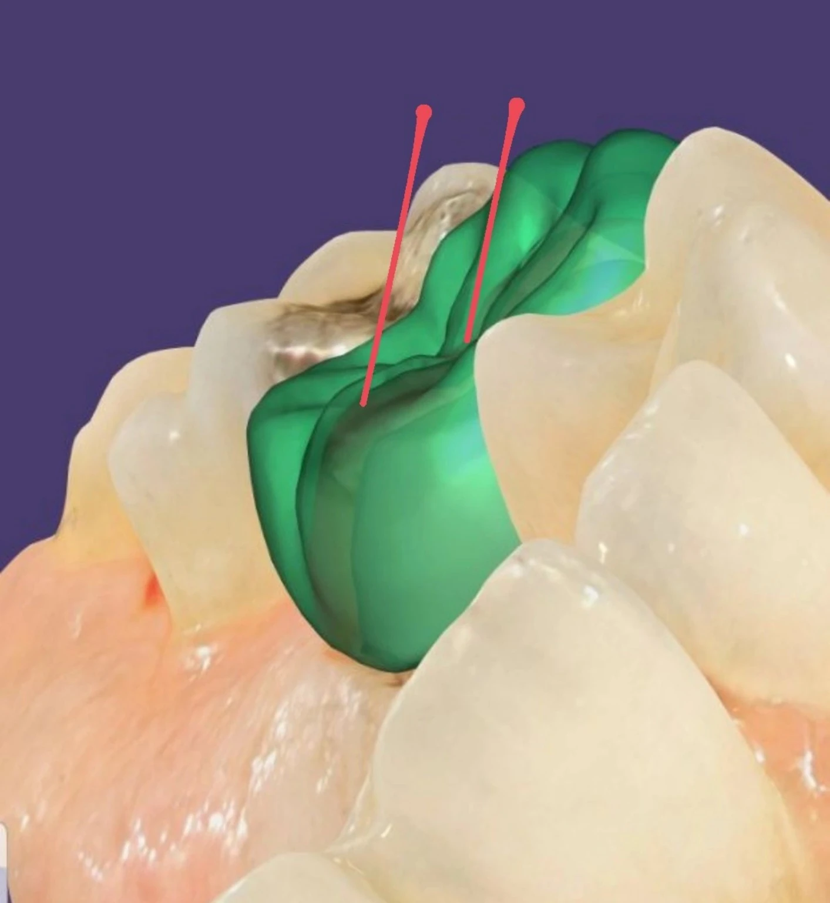

نسخه استخراجشده؛ ترجمه یا تأیید علمی انجام نشده است. وضعیت: captured
برای طراحی روکش اغلب اطلاعات دقیقی از حرکات فکی، اثر راهنمای قدامی و مسیر کندیلها نداریم. بااینحال میتوان از اثر همین عوامل در دندانهای بیمار استفاده کرد.
دندانهای موجود فقط به شرط فرم و عملکرد بیمشکل سرنخاند. دندانی با ظاهر مناسب اما عملکرد مشکلدار این شرط را کامل نمیکند. دندانهایی که بدون مشکل در سیستم حرکتی همین بیمار کار میکنند میتوانند الگوی مناسبی باشند؛ پس مرجع، دندان قابل اتکای همان بیمار است، نه صرف موجود بودن دندان یا آماده بودن یک فرم.

شیب کاسپهای روکش با شیب دندانهای قابل اتکای بیمار هماهنگ میشود. کمبود ثبت مستقیم حرکات، اثر آنها را در دندان کارآمد بیاعتبار نمیکند؛ این اثر سرنخ طراحی است. نتیجه بهترین برآورد با اطلاعات موجود است، نه اندازهگیری دقیق مسیر کندیل یا اثبات یک شیب یکسان برای همهی بیماران.
دندانپزشک و طراح لابراتوار هر دو به شیب دندانهای بیمار توجه کنند. در تصمیم مشترک، شرط فرم و عملکرد مرجع و حد اطمینان برآورد حفظ شود؛ توافق بر شکل روکش جای بررسی قابلیت اتکای دندان مرجع را نمیگیرد.